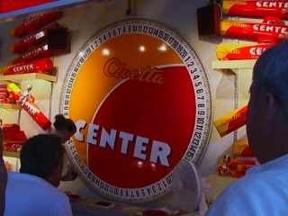

– Jag spelade gånger på samma nummer utan att vinna en enda gång. Det måste ju ha varit något fel på hjulet, säger Sara. – Men det är ju bara 1/20 chans att vinna varje gång, försöker Mårten trösta henne.
Hur många procents chans hade Sara egentligen att vinna minst en gång med sin taktik?
Svar: %
– Kan vi inte kasta en vanlig tärning, säger Sara, som inte är riktigt övertygad. Det borde väl vara ungefär 17% chans att få sexa? – Men är du säker på att relativa frekvensen alltid blir samma som sannolikheten? undrar Mårten.
Sara och Mårten får följande serie:
Kan du räkna ut relativa frekvensen för sexa?
Relativ frekvens: %